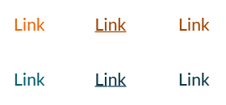
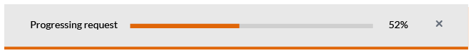
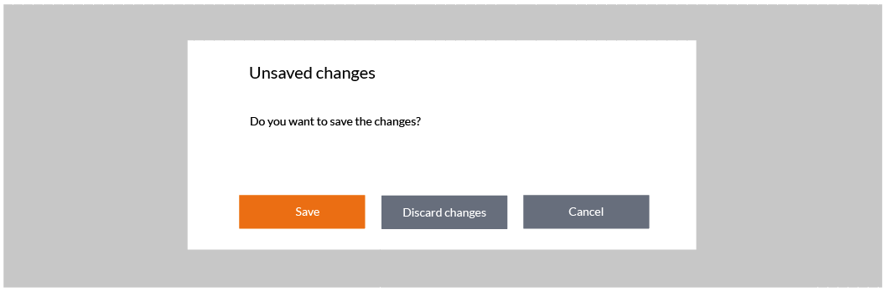
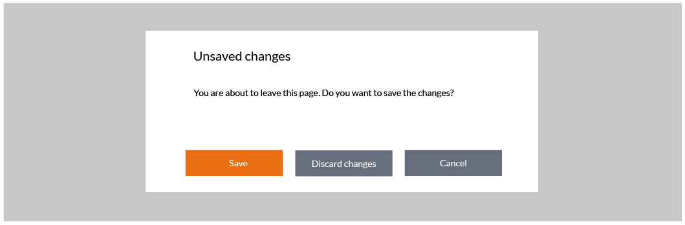
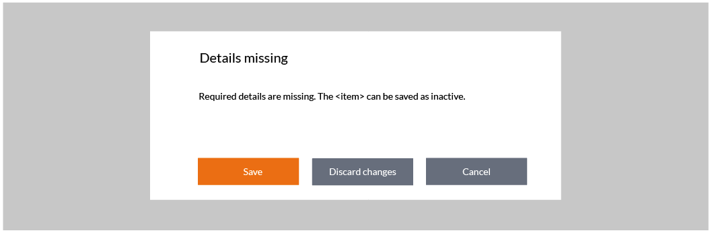
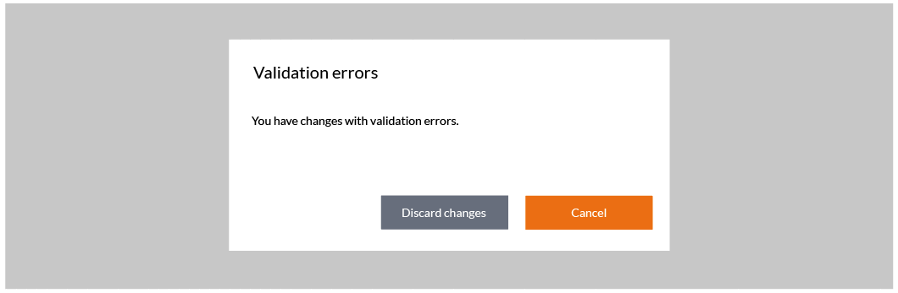
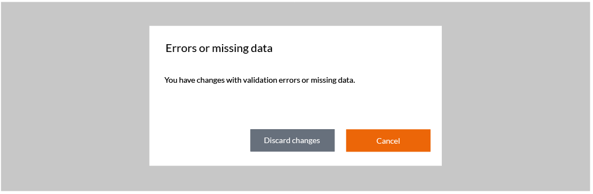
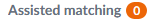

Design
Design principles
This section describes OpusCapita design principles. A design principle is a general repeatable solution to a commonly occurring problem. It isn't necessarily a finished design that can be transformed directly into code but can be a description or template that can be used in many different situations.
Focus
Focus is indicated with yellow color.
Focused icon
Focus in pagination
Focused hyperlink
Focused button
Links
Links are orange. The secondary color for links is petrol and it is used when the link text is long or there is many links in a view. Links are undelined and darkened when hovering. Links can also be darkened when visited, but this feature needs to be considered case by case because it does not fit to all views and cases.
Buttons
Buttons, also called action buttons, are used when the user is exchanging information with the system.
- Buttons are not used for navigation.
- Button does not have both an icon and a textual label
- Disabled button is used when the button is not yet active, but will change to active later, e.g. when the user has filled in some information.
- If the button is used to open e.g. a dialog it has ellipsis (...) at the end of the button text.
Guidelines for buttons
- Width of the button varies according to its text label, but it has minimum value for that.
- Button does not have both an icon and text. Only a textual label is most used and an icon can be used in a button only for some most common meanings like "Search".
- Disabled button is used when the button is not yet active, but will change to active later, e.g. when the user has filled in some information. If we can’t assume user to understand why the button is inactive, it is left as active, and a click displays a tooltip reason why it is not usable at the moment.
- A button can have the focus in case it is not disabled. If a button has keyboard focus, pressing the Enter key raises the Click event.
- As a general rule for pop-ups and dialogs: the first button is the one that takes the action forward: the "okaying" button, such as Continue, Save, Send, or Next. Next to the previous is its counterpart, the "cancelling" button, such as Cancel or Back.
- If the button is used to open e.g. a dialog it has an ellipsis (three dots) at the end of the text.
- Buttons, also called action buttons, are used when the user is exchanging information with the system. Buttons are NOT used for navigation.
Order of the primary (orange) and default (gray) buttons.
The primary button is the first and default buttons come after that. Buttons are aligned to the right in forms and centered in dialogs.
- As a general rule for pop-ups and dialogs: the first button is the one that takes the action forward: the "okaying" button, such as Continue, Save, Send, or Next. Next to the previous is its counterpart, the "cancelling" button, such as Cancel or Back.
- If all needed buttons are having the same priority, then only default buttons are used.
- Only one primary button per view is allowed and it takes the enter if user has pressed it from the keyboard.
Common button labels and action commands
Button labels need to describe the purpose of the action so that it helps end user to understand it (as an example using of Delete and Cancel buttons in a dialog is preferred over using OK and Cancel buttons). The table below describes the most common button labels and action commands for menus that should be used consistently in different products and views.
| Label | For |
|---|---|
| Save | Saving information into a system e.g. at the end of a form. |
| Discard changes | All changes or creation of a new item is discarded. If this is appearing in a dialog after the user has selected to close e.g. a wizard then that wizard is also closed. |
| Cancel | Interrupting the action or process and returning to the previous page without saving or submitting information. |
| Submit | Submitting information at the end of a form. |
| Back | Returning to the previous page. Used in the context of informative content rather than actions. |
| Close | Closing the browser window. Used only in informative pop-up windows or in wizards. |
| Reset | Resetting form fields. Prompt recommended if the form is long. |
| Search | Label for search fields. For the button, it is better to use only the magnifier icon. |
| Stop | Stop the action or process and staying in the current page and keeping e.g. the processed search results. |
| OK | Accepting a single comment from the system. |
| Edit | Editing content or information. Do not use the command "Modify". |
| Add | Creating a new page, user, etc. Do not use command "Add new". |
| Delete | Deleting some record or a row permanently. Confirmation mandatory. |
| Remove | Removing some record or a row e.g. from a selection. No confirmation needed. |
| Inactivate | Inactivating e.g. an account so that new actions cannot be performed, but the ones already made remain valid and visible in the system. Reactivation can be supported. Confirmation recommended. |
| Approve | Approving an item in a workflow, task list, etc. Do not use the command "Accept". |
| Reject | Rejecting an item in the workflow, task list, etc. |
Icons
In general use icons from Font Awesome.
Indicator icons
- Indicator icons are used when the system indicates status information for the end user.
- Avoid using too many icons for making it easier for an end user to learn the meaning of those.
- Icons do not have a textual label.
- Use simple, flat and one-colored icons.
Common indicator icons
The table below describes the most common indicator icons that should be used consistently in different products and views.
| Icon | For |
|---|---|
| Warning | |
| Alert | |
| Information | |
| Success |
Action icons
- Action icons are used for offering contextual actions.
- Action icon is differing from the indicator icon by having the yellow hover color
- If the action is disabled for any reason, the action icon is not shown i.e. it does not have the disabled state.
Common action icons
The table below describes the most common action icons that should be used consistently in different products and views.
| Icon | For |
|---|---|
| Open and close the main navigation. | |
| Ellipsis. Open a contextual menu. | |
| Open the lover levels in the main navigation. | |
| Close e.g. a dialog | |
| Expand or maximize | |
| Collapse or minimize | |
| Contextual help | |
| Product documentation | |
| Edit | |
| Settings | |
| Search | |
| Shopping cart | |
| Logout | |
| Login | |
| Refresh | |
| Delete |
Scrolling
Avoid having horizontal scrollbar. By default content, e.g. text, should wrap and scroll vertically.
Keyboard support and accessibility
Notifications
Use common component Alerts for showing notifications. Multiple warning and error notification for same reason should not be stacked i.e. previous ones are removed.
Types- Success - can be dismissed automatically and when the user clicks some other element
- Information - can be dismissed automatically and when the user clicks some other element
- Warning - must be dismissed by user
- Error - must be dismissed by user
Dismissing notifications
User can dismiss every type of notification manually. Informational and success are dismissed automatically by default after certain period of time. By default warning and error notifications are not dismissed automatically. Dismiss behavior and automatic closing time can be adjusted case by case as needed.
Contextual notifications
Contextual notifications can be used if the notified message is related toonly some part of data on the current page.
Progress and waiting indicators
Progress and waiting indicators are used to indicate that the system is loading content. It is recommended to tell the user how long or which phases an operation will take and it's progress, if it is known. If that information is not available, we'll visualize unspecified waiting time. If the loading action does not prevent user to proceed with other tasks, then user should be able to close the indicator and needs to be informed when the loading is completed.
Progress bar filling from 0% to 100%
Linear waiting indicator
Circular waiting indicator
This is waiting to be changed to orange.
Modals
Bootstrap is used as a basis for implementation. Overlapping modals i.e. two at a time should never be used: this is an indication that something is wrong in the workflow.
Modal dialog dimms the background with Black and 22% transparency.
Using unified modals is highly recommended to help users to recognize similar cases and proceed with minimal cognitive effort. Please check the common modal designs and texts below.
Delete one item
When to use: Show this dialog every time the user chooses to delete any item.
Example: Do you want to delete user Ben Smith?
Delete multiple items
When to use: Show this dialog every time the user chooses to delete multiple items.
Example: Do you want to delete 5 users?
Unsaved changes
When to use: Show this dialog when the user has chosen to close e.g. a wizard with a close button and there is unsaved changes.
Unsaved changes when leaving a page
When to use: Show this dialog when the user has chosen to leave a page e.g. by selecting a different tab and the page contains unsaved changes.
Mandatory details missing
When to use: Show this dialog when the user has chosen to close e.g. a wizard with a close button and there is mandatory details missing that prevent from saving the item.
Required details missing
When to use: Show this dialog when the user has chosen to close e.g. a wizard with a close button and there is required details missing that prevent using the item, but saving the item as inactive (or draft) is allowed.
Validation errors
When to use: Show this dialog when the user has chosen to close e.g. a wizard with a close button and there is validation errors that prevent saving the item.
Validation errors or missing data
When to use: Show this dialog when the user has chosen to close e.g. a wizard with a close button and there is validation errors or missing data that prevent saving the item. Use this dialog only in case it is not feasible to implement a check so that these cases can be separated (it is recommended to use separated dialogs presented above).
Field validation
Field data should be validated e.g. when the focus is moved out of the field or while user is typing. Validation has to be done at latest when a button (Save/OK) is pushed. After that the focus is set on the first element that contained an error. Show an instruction text to explain the error reason to the user. The error text and the field color in error case is red. Once corrected, the error label should be removed and the text color returns to default. Errors are not shown when an empty form is opened.
Mandatory fields
Indicate a mandatory field by using an asterisk ( * ) after the label.
Focused field
Focused field is indicated with yellow.
Dimming vs. hiding
A button, an input element (text input, radiobuttons etc) or an action icon is hidden if the user does not need it in any situation e.g. if he does not have access rights for that action. A button or an input element is dimmed if the user needs it e.g. after some other action, but it is not available currently. Action icons are never dimmed but hidden instead.
Tool tip
Tool tips are small text boxes that provide information about a component or area whenever the user "hovers" the pointer over that area, without pressing the mouse button or uses the long tap with a touch enabled device.
- Delay for opening the tool tip should be - around 60 milliseconds - so users will not be impatient about its use.
- The duration is controlled by the time the user stays hovered over the object.
- It is recommended to use maximun 3 rows for tooltips.
- Tool tips do not include interactive elements like links or buttons.
- Do not overuse tool tips, but only when more information is needed.
Badge
Badges can be used to highlight new or unread items.
Product documentation and contextual help
Contextual, page related help should be available where needed. There is also a product level help which provides general information about the service and includes also all the same instructions as contextual helps in one package.